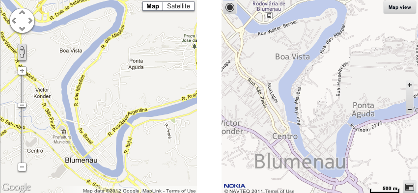
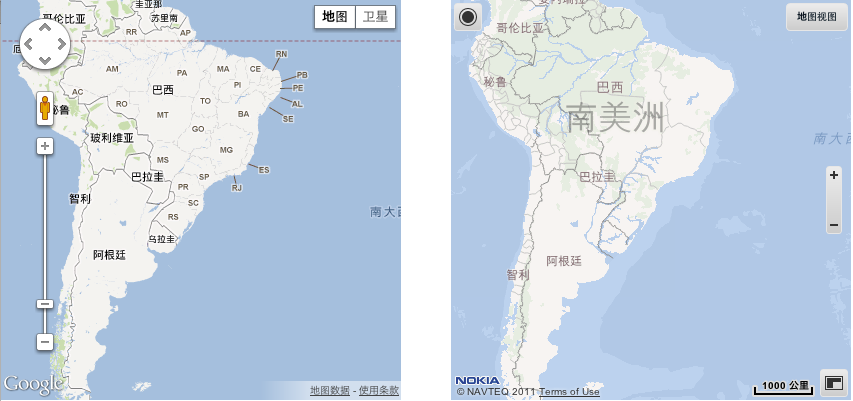
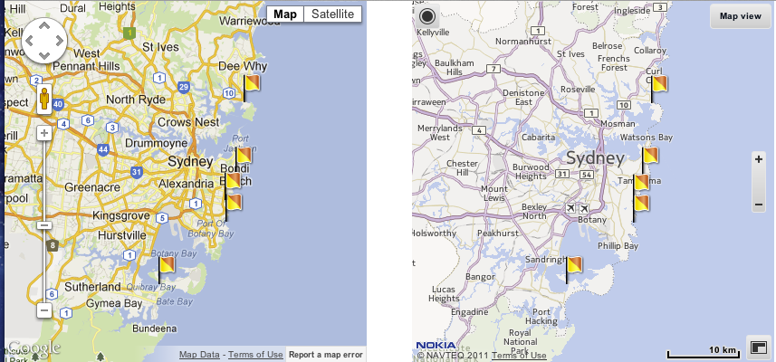
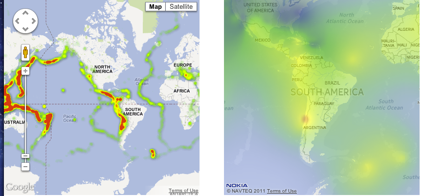
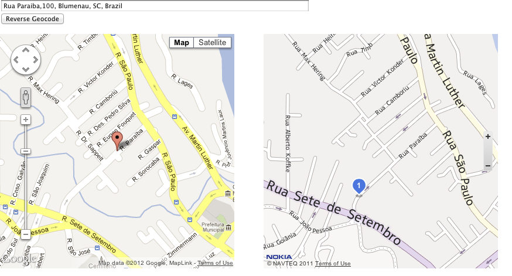

O objetivo dessa série de exemplos é demonstrar que é perfeitamente possível substituir o Google Maps pelo Nokia Maps.
Um dos principais motivos que tem levado os desenvolvedores a procurar alternativas ao Google Maps é a sua recente alteração na política de preços, que acabou por encarecê-lo demais.
Outro motivo que pessoalmente me leva a substituí-lo é o atraso nas atualizações dos mapas no Brasil, bem como a falta de cobertura em cidades dos grandes centros.
O Nokia Maps (Navteq) possui uma longa tradição de ter mapas bem atuais
Os exemplos abaixo tentam igualar os exemplos do Google Maps disponíveis em aqui.Como são muitos exemplos, dei preferência para os mais usados para uma primeira versão. Com o tempo agregarei mais exemplos.
O projeto pode ser baixado em https://github.com/cassioeskelsen/GoogleMaps2NokiaMaps. Dúvidas podem ser enviadas por email para eskelsen arroba gmail.com
Map Simple

Map Language

Icon Complex

Heat Map

Geocode
